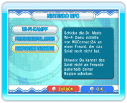
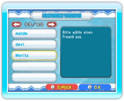
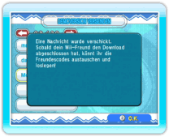
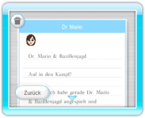

20 |
Dr. Mario Demoversion versenden |
 |
Du kannst eine Demoversion des Spiels an Freunde versenden, die Dr. Mario & Bazillenjagd nicht online erworben haben. Stell vor dem Versenden sicher, dass WiiConnect24 korrekt eingerichtet wurde Hinweis: Die Demoversion kann nur für Onlinespiele gegen deine Freunde verwendet werden. Um die Demoversion verwenden zu können, muss außerdem ein Mitspieler die Vollversion besitzen. Wenn beide Spieler die Demoversion verwenden, kann Dr. Mario & Bazillenjagd nicht gespielt werden. Du benötigst deinen eigenen Freundescode, um die Demoversion zu versenden. Diesen Code erfährst du, indem du auf dem Modusauswahl-Bildschirm NINTENDO WFC auswählst, anschließend FREUNDESEINSTELLUNGEN und schließlich FREUNDESCODE BESTÄTIGEN. ● Die Demoversion versenden 
Wähle auf dem Modusauswahl-Bildschirm NINTENDO WFC, um den Nintendo WFC-Menübildschirm aufzurufen, und wähle dort DEMOVERSION VERSENDEN. 
Wenn dein Wii-Adressbuch angezeigt wird, wähle den Freund aus, dem du die Demo zuschicken möchtest, und bestätige mit JA. 
Eine Bestätigung wird angezeigt, nachdem die Demoversion versendet wurde. Hinweis: Du kannst das Spiel nicht an Freunde außerhalb deiner Region schicken, und ebenso nicht an Freunde ohne Wii-Code. 
● Die Demoversion empfangen Nachdem das Spiel versendet wurde, erhält dein Freund eine Nachricht auf der Wii-Pinnwand. Nachdem er sie gelesen hat, kann er den Download starten. Nach dem Abschluss des Downloads erhält dein Freund einen Freundescode über das Spiel und ihr müsst nun gegenseitig eure Freundescodes registrieren (siehe "Freundeseinstellungen"). Möchtest du gegen deinen Freund spielen, dann wähle NINTENDO WFC auf dem Dr. Mario-Menübildschirm, um den Nintendo WFC-Menübildschirm aufzurufen. Wähle dort Wi-Fi-KAMPF, dann FREUND EINLADEN und wähle dann den Freund aus, gegen den du spielen möchtest. Hinweis: Nur der Spieler, der die Vollversion von Dr. Mario & Bazillenjagd besitzt, kann einen Freund einladen. Die Einstellungen und Ergebnisse werden nicht gespeichert. |
 |
 |